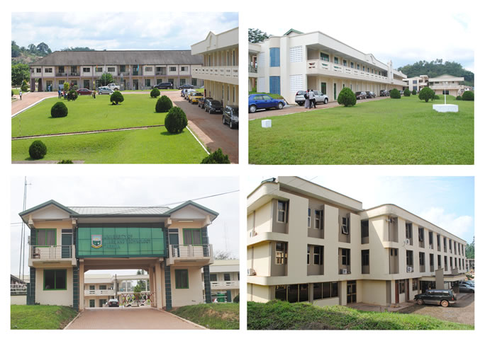

I am Acquah Mynder, a self-motivated BSc Cybersecurity student at the University of Mines and Technology (UMaT), Tarkwa, originally from Tepa in the Ahafo Region of Ghana.
I see cybersecurity not just as a career but as a calling — to protect people, businesses, and national systems from harm.
Beyond academics, I enjoy music and reading — qualities that make me a well-rounded individual as much as a technically focused student.
I am just getting started, but my commitment to the field of cybersecurity is already clear — one system at a time.

Education
After excelling in STEM subjects at the WASSCE level, I gained admission to the BSc Cybersecurity programme at the University of Mines and Technology (UMaT), Tarkwa, Ghana. I am currently in Year 1, studying fundamental computing concepts, database systems, programming, and professional development skills.
Interests
Cybersecurity
Web development
Database Management
Music
Reading and Research
Academic Goals
My planned path toward graduation and career readiness:
Graduate with a First-Class Honours Degree
Earn a globally recognised certification such as CompTIA Security+, Certified Ethical Hacker (CEH), or Cisco CyberOps Associate before completing Level 200, adding professional credibility to my academic qualifications
Complete a Cybersecurity Internship
Develop and publish an open-source security tool
Secure a career as a cybersecurity analyst
Recent Achievement
I successfully installed and configured MySQL Server and MySQL Workbench, created databases, and built this personal academic website — applying practical skills from my Database Systems and Web Programming courses at UMaT.